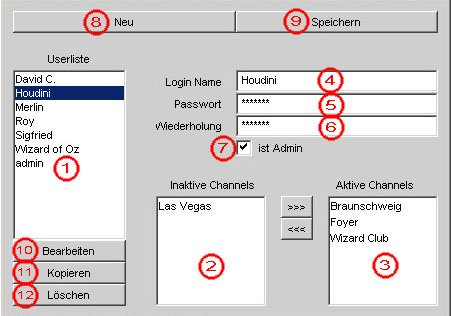
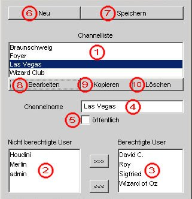

Kapitel 2: Benutzung der Administratorfunktionen
-
2.1 Die Benutzerverwaltung
-
Mit Hilfe der Benutzerverwaltung haben Sie die Möglichkeit, neue Benutzer anzulegen,
Benutzerdaten zu bearbeiten und existierende Benutzer zu löschen.
-
2.1.1 Das Benutzerverwaltungsfenster
-

- Gesamte Benutzerliste
- Fenster "Inaktive Channels"
- Fenster "Aktive Channels"
- Feld "Login Name"
- Feld "Passwort"
- Feld "Wiederholung"
- Checkbox "Ist Admin"
- Knopf "Neu"
- Knopf "Speichern"
- Knopf "Bearbeiten"
- Knopf "Kopieren"
- Knopf "Löschen"
-
2.1.2 Neuen Benutzer anlegen
-
Um einen neuen Benutzer anzulegen, klicken Sie zuerst auf "Neu" (8).
Tragen Sie dann den Loginnamen und das Passwort für den Benutzer in die
entsprechenden Felder ein. In das Feld "Wiederholung" (6) tragen Sie nochmals
das Passwort ein, damit sichergestellt ist, daß Sie bei der ersten Eingabe
keinen Tippfehler begangen haben.
Wenn Sie "Ist Admin" (7) aktivieren, dann bekommt der neue Benutzer
Administrationsrechte und hat somit auch Zugriff auf die Benutzer- und
Channelverwaltung.
Danach müssen Sie noch festlegen, welche Channels der neue
Benutzer betreten darf. Dazu wählen Sie in der Liste "Inaktive Channels" (2)
die gewünschten Channel aus und schieben sie mit den dazwischen befindlichen
Pfeilknöpfen in die Liste "Aktive Channels" (3). Haben Sie die Channels
ausgewählt und Benutzernamen und Passwort sowie den Administratorstatus
festgelegt, klicken Sie einfach auf "Speichern" (9) um den neuen Benutzer
dauerhaft im System zu speichern.
Falls sie viele Benutzer mit relativ identischen Daten (z.B. den gleichen
aktiven Channels) einrichten möchten, können Sie sich auch Arbeit
ersparen, indem Sie die Funktion "Kopieren" benutzen:
Dazu wählen Sie aus der "Userliste" (1) einen bereits existierenden Benutzer
aus und klicken auf "Kopieren" (11). Daraufhin werden die Daten des
gewählten Benutzers angezeigt, wobei im Feld "Login Name" (4) durch
ein nachgestelltes "[Kopie]" deutlich gemacht wird, daß man an einer
Kopie arbeitet. Mit den angezeigten Daten läßt sich nun der neue Benutzer
entsprechend den Bedürfnissen modifizieren und mittels "Speichern" (9)
einrichten.
-
2.1.3 Benutzer editieren
-
Um Benutzerdaten zu verändern, z.B. das Passwort oder die aktiven
Channels, wählen sie den zu bearbeitenden Benutzer in der "Userliste" (1)
aus und klicken auf "Bearbeiten" (10). Die Daten dieses Benutzers befinden
sich nun in den entsprechenden Felden, wo sie geändert werden können.
Channels werden mit den Pfeilbuttons zwischen den Listen (2) und (3)
hin und her geschoben. Wenn Sie die Änderungen abgeschlossen haben, klicken
Sie auf "Speichern" (9) um die geänderten Daten dauerhaft zu sichern.
-
2.1.4 Benutzer löschen
-
Wenn Sie einen Benutzer dauerhaft aus dem System entfernen wollen, wählen
Sie seinen Namen in der Benutzerliste aus und klicken auf "Löschen".
Der Benutzer wird daraufhin sofort komplett aus der Benutzerverwaltung
gelöscht, da wir davon ausgehen, daß der Admin weiß, was er tut.
-
2.2 Die Channelverwaltung
-
Mit Hilfe der Channelverwaltung hat ein Administrator die Möglichkeit, neue
Channels anzulegen, existierende Channels zu bearbeiten und existierende
Channels zu löschen.
-
2.2.1 Das Channelverwaltungsfenster
-

- Gesamtliste der Channels
- Liste "Nicht berechtigte User"
- Liste "Berechtigte User"
- Feld "Channelname"
- Checkbox "öffentlich"
- Knopf "Neu"
- Knopf "Speichern"
- Knopf "Bearbeiten"
- Knopf "Kopieren"
- Knopf "Löschen"
-
2.2.2 Neuen Channel anlegen
-
Wenn Sie einen neuen Channel anlegen möchten, klicken Sie einfach auf
den Knopf "Neu" (6). Dann tragen sie im Feld "Channelname" (4) den Namen ein,
den der neue Channel haben soll. Aktivieren Sie nun die Checkbox "öffentlich" (5),
können Sie sofort auf "Speichern" (7) klicken, denn wenn diese Checkbox aktiviert
ist, kann jeder Benutzer - und auch Gäste - den Channel benutzen.
Ist die Checkbox allerdings nicht aktiviert, macht es Sinn, dem Channel
Benutzer zuzuweisen, die diesen betreten dürfen. Das Zuweisen erfolgt analog zu
dem Vorgang in der Benutzerverwaltung, indem in der Liste "Nicht berechtigte User" (2)
die gewünschten Benutzer ausgewählt und mittels des entsprechenden Pfeilknopfes
der Liste "Berechtigte User" (3) hinzugefügt werden. Haben Sie dies abgeschlossen, so
klicken Sie auf "Speichern" (7) und der neue Channel ist aktiv.
Um sich etwas Arbeit beim Zuweisen der Benutzer zu ersparen, können Sie auch
einen bereits existierenden Channel kopieren:
Dazu wählen Sie aus der "Channelliste" (1) einen bereits existierenden Channel
aus und klicken auf "Kopieren" (9). Daraufhin werden die Daten des
gewählten Channels angezeigt, wobei im Feld "Channelname" (5) durch
ein nachgestelltes "[Kopie]" deutlich gemacht wird, daß man an einer
Kopie arbeitet. Diese können Sie nun nach Ihren Wünschen bearbeiten. Wenn Sie
damit fertig sind genügt ein Klick auf "Speichern" (7) und der Channel ist
aktiv.
Diese Funktion ist z.B. sinnvoll, wenn sie eine größere Gruppe von berechtigten
Benutzern eines Channels in den neuen übernehmen möchten.
-
2.2.3 Channel bearbeiten
-
Wenn Sie einen Channel bearbeiten möchten, wählen Sie diesen aus
der "Channelliste" (1) aus und klicken Sie auf "Bearbeiten" (8).
Sie können den Namen des Channels ändern, indem Sie einen neuen eingeben.
Sie können den Channel durch Aktivierung des "öffentlich"-Knopfs (5) für jeden
öffentlich machen, und Sie können die Benutzerlisten durch Auswählen der
Benutzer und anschließendes Klicken der entsprechenden Pfeilknöpfe zwischen
den Listen ändern.
Haben Sie Ihren Bearbeitungswunsch abgeschlossen, so klicken Sie
"Speichern" (7) und die Änderungen sind aktiv.
-
2.2.4 Channel löschen
-
Wenn Sie einen Channel löschen wählen, wählen Sie den Eintrag in der
"Channelliste" (1) aus und klicken auf "Löschen" (10).
Der Channel wird daraufhin sofort komplett aus der Channelverwaltung
gelöscht.
(c) 2001 WorstCases